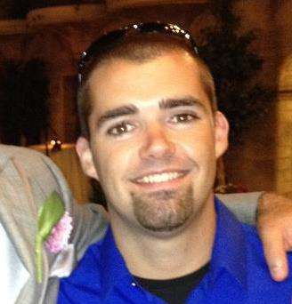

About Me

Hi there! My name is Andy Roush, and I am an aspiring web developer (duh =P). I currently live in Brea, but have lived all over North and South Orange county over the last 10 years. I am married to my high school sweetheart and have two beautiful girls. Welcome to my portfolio page!
As far as jobs are concerned, I've done many different things. I started my Career at McDonalds at the ripe age of 16. Bounced between there and Applebees for a couple of years, until I found a job at Target. There I managed their photo lab, as well as supported most other departments like electronics, guest services, garden, cashier. I truly loved working at Target, but I couldn't see myself there forever. I then moved on to Carmax. I was there for 6 years until I was let go in 2013. I managed their inventory operations department which consisted of everything "behind the scenes". That was after I worked up front supporting the purchasing department. I got a great taste of how the business works from both ends, which was very interesting. After Carmax I worked a couple of side jobs. I managed my buddy's transmission shop, as well as did personal training at a nice Mom and Pop gym in Irvine. Taking this back a couple of years, around 2012 I started video editing. That led me in to starting my own Video production company (not legit at the time). Video production, editing specifically, was my passion. I put it on hold when my first born came in to this world in 2015. I am now a facilities tech/project coordinator at a mortgage company in Anaheim. This year will be 4 years. Even so, I am looking for a career change. Something long term, rewarding, and obviously lucrative. I am excited to start my journey in to Web Development, and I hope to make this my career soon!
Connect with Me